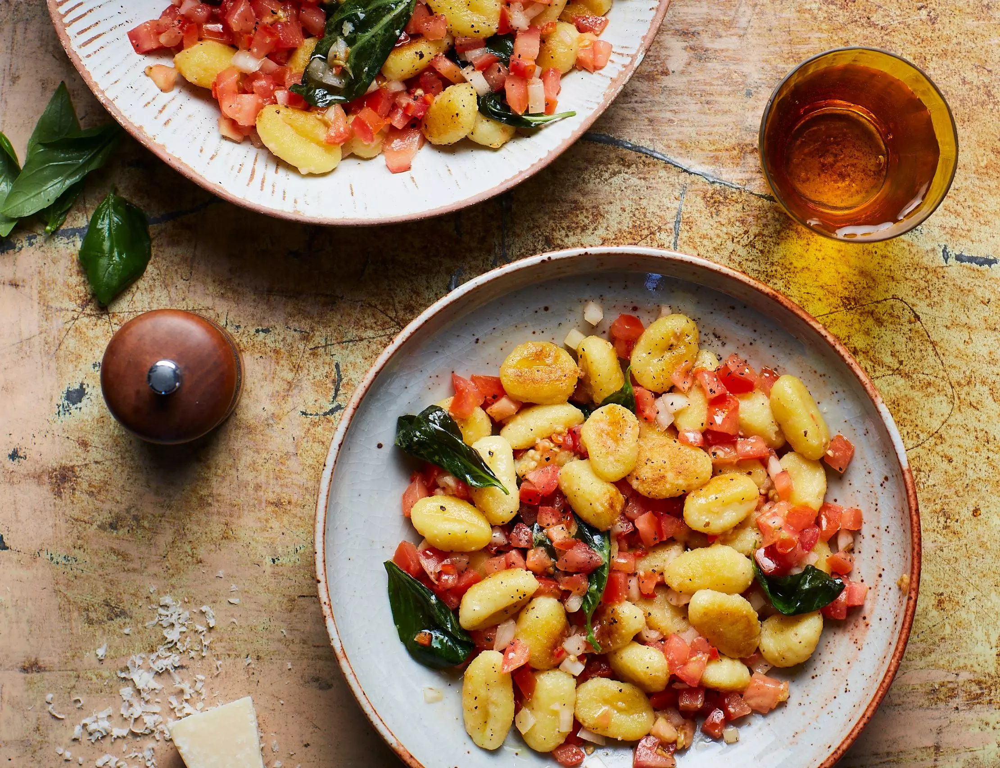

Salsa Gnocchi

Description
Gnocchi are delicious little Italian dumplings, which are now very easy to find in most supermarkets. With this recipe we've married Italian gnocchi
with Mexican salsa. If you've never tried gnocchi before, pick up a pack next time you're at the shops and give this recipe a go - we're pretty sure
you'll love it!
Ingredients
- 3 tbsp olive oil (plus extra for drizzling)
- 1 tbsp plant-based parmesan (grated, optional)
- 1 handful of basil
- 1x 500g pack of gnocchi
- 4 large tomatoes
- 1 shallot or 1 small onion
- 1 garlic clove
- 1/2 red chilli
- salt and pepper (to taste)
- 1 tbsp red wine vinegar
Steps
Cook the gnocchi
- Drop the gnocchi into the pan of boiling water
- Cook according to the instructions on the packet, then drain
Meanwhile, make the salsa sauce
- Halve the tomatoes and use a teaspoon to scoop out and discard the watery seeds
- Chop one of the tomatoes into small dice and set it aside for later
- Trim the onion, garlic and chilli
- Add the remaining tomato halves, onion, garlic, red wine vinegar, chilli and 1 tablespoon of the olive oil to the food processor
- Pulse until you have a chunky salsa (or use a knife to finely chop, if you prefer)
- Season with salt and pepper
Fry the gnocchi
- Put the frying pan on a high heat
- Add the remaining 2 tablespoons of olive oil
- Tip the gnocchi into the hot oil and fry for 5–6 minutes, until golden and crisping around the edges
Add the salsa
- Tip the salsa into the frying pan and toss it through the gnocchi
- Once hot, remove from the heat and stir in the fresh chopped tomato
- Stir through most of the basil, reserving a few leaves for garnish
Serve
- Drizzle the gnocchi with a little olive oil and top with the reserved basil leaves
- Sprinkle with grated plant-based parmesan, if you like
Back to main page